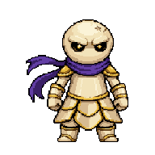
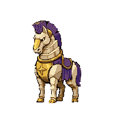

Pawnbound
In development · Pre-production
Pawnbound is a dark, revenge-driven monster-collecting RPG. The secret society that murdered your father is out there, and you hunt it. Battles are turn-based but reactive. You time your attacks, dodge, and parry. Skill speeds up your growth, but you never need it to progress. Everything you own is a card: Pawns, capture seals, items. Your deck is your army. Each Pawn line pairs an element with a role, and the role decides what that Pawn can do. The look is pixel sprites in small 3D worlds, with a dark, muted palette. Pawnbound is in pre-production and planned for Windows first.
The Dex
Every monster's original illustration, with the pixel sprite you meet in the game in the corner, its element and its battle role (Fang, Maul, Tide, Aegis, Riposte or Hymn). 15 so far; more appear as the art team finishes them. Final evolutions are hidden: click the eye to see one.

Read more
Children in the snow courts leave a single stone on the Far Rank Stone's last square, in case a Pawntlet rolls by. It rolls where it likes and bumps whatever stands in its way, to find out if it is strong.

Read more
The old walls of the snow courts know this one well: it has argued with them and lost, and it goes back to argue again. The people of Hollow Crown say it keeps bumping the same stone until the stone gives way, and it always bumps a little harder.

Read more
It has stopped rolling and started walking, and the guards on the upper courts' broken stairs now step aside before it reaches them. The people of Hollow Crown say it does not hurry, because nothing that stands in its way has ever outlasted the wait.

Read more
The children of the snow courts no longer leave stones for this one, because a Pawncrest does not wait for the guards to step aside. The people of Hollow Crown say no guard has yet held one back, and they keep watch by the fire that will not go out.

Read more
They say the one piece that walked the whole length of the Far Rank Stone and kept walking came down from the snow courts and never stopped at the last square. Its blows cracked the guards of the high courts, and the fire that will not go out on Hollow Crown was said to burn brighter the night it passed. The children still leave their single stone, and the old ones say the one that reaches the far side never comes back the same.

Read more
The keystone above the broken gate of the fortress ruins was set there for it, and it keeps watch beside that stone. The people of Hollow Crown say it will not step off the threshold for any traveller, however hard the wind blows up the pass.

Read more
The outer gate has been pushed at by every traveller who came up the pass, and it has pushed them all back down. The people of Hollow Crown say the fire that will not go out was lit beside its gate, and that it has not let go of that gate since.

Read more
The people of Hollow Crown no longer try to move it from the upper gate, and they take the broken stairs round it instead. Those who have tried to pass say it never chases them, and that it has never needed to.

Read more
The keystone above the broken gate was never taken down, because the people of the highest courts know who keeps it now. No raider has come through the highest gate since it took up that watch, and the fire that will not go out burns steadier while it stands guard.

Read more
Old travellers tell that the fortress was once a whole country of gates, and that the last of them was left standing when the rest had fallen. They say that guard has never once stepped aside from its gate, and that the fire that will not go out on Hollow Crown was lit to keep it warm. The keystone still hangs above the last gate of the far courts, and the old ones say that gate stands open for no one.

Read more
A little ivory chess piece that hops in an L and will not be talked out of it. A purple crest stands up along its neck, stiff as carved silk.

Read more
Its neck has grown long and its crest sweeps back like a flag. A gold band marks its muzzle, and one hoof is already capped in gold.

Read more
The runner has become a warrior: broad in the chest, plated in gold, and never again cute. It tilts its head low, and the corner is already behind it.

Read more
Gold closes over the ivory like a suit of armour, and wide golden wings unfold from its shoulders. It no longer hops in an L. It leaps the whole mountain in one.

Read more
A ring of gold stars stands behind its head, and its eyes burn like the first stars of the night. It is the move that no one saw coming, and it has already been made.